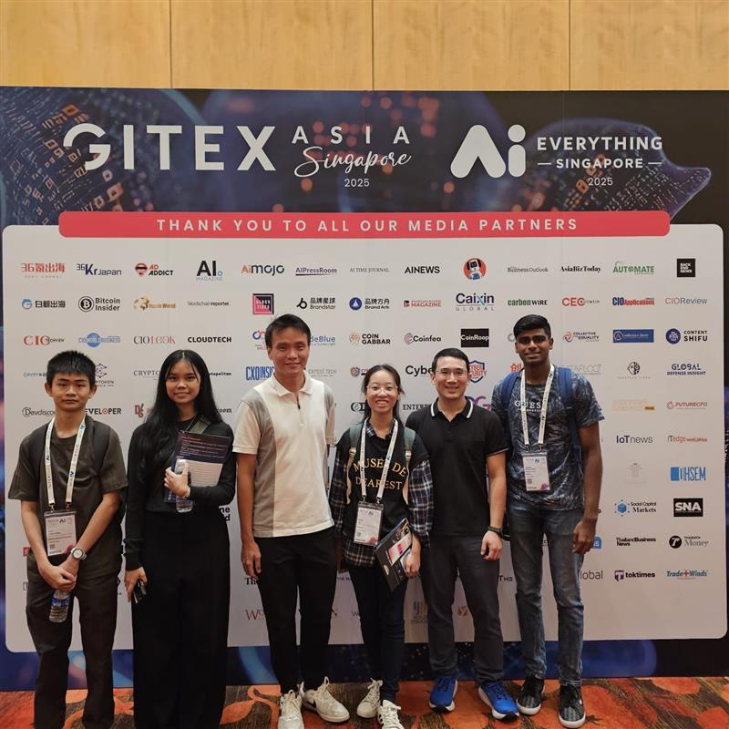

About Me
I’m a Third-Year Applied Artificial Intelligence student at Temasek Polytechnic, passionate about building practical tech solutions that bridge AI with real-world problems. My mission is to use technology meaningfully to automate, assist, and improve lives. Always excited to learn new tools, frameworks, and collaborate across disciplines to deliver real-world solutions.
 Tech Skills & Focus
Tech Skills & Focus


🧾 Certifications
I’ve earned over 200+ certifications from platforms like AWS, Google, Microsoft, Cisco, LinkedIn and more—covering AI, cloud, cybersecurity, DevOps, data, and project management.
View on CertDirectory: certdirectory.io/profile
View on Credly: credly.com/moanish
🛠 Completed Projects
🤖 AI Psychologist Chatbot
This chatbot uses RASA, GPT-4o, scikit-learn classifiers and a MySQL backend to offer empathetic emotional support. It includes a Streamlit UI and logs intent-recognized conversations.
GitHub📉 HDB Resale Price Prediction
Used regression models like XGBoost and CatBoost to predict Singapore HDB resale prices. Complete EDA, feature engineering, and deployment pipeline included.
GitHub🧠 AI & Ethics Case Study: Microsoft Tay
Analysed Microsoft Tay’s failure and proposed solutions such as HITL governance, input filtering, and explainability to guide responsible AI development.
💺 BreakTime – Smart Office IoT
An AWS IoT-based solution to monitor desk occupancy and send alerts for healthier work habits. Uses sensors + SNS + DynamoDB with a web dashboard.
🚦 Deep Learning with GTSRB Dataset
Built CNN-based models (VGG, ResNet) to classify traffic signs from images. Includes data augmentation, EDA, and live demo on Streamlit.
GitHub💬 AI Psychologist Chatbot – Part 1
Benchmarked 21 ML models to classify user intent for chatbot dialogue. Used TF-IDF, RidgeClassifier, and SGDClassifier for training and validation.
GitHub📧 ConciseMail – RPA Email Bot
Automated HR email management with UiPath and OpenAI. Reads Outlook emails, summarises with ChatGPT, logs to Excel, and sends updates to Discord.
🌱 GreenHub – Sustainability App
Flutter-based app for sharing sustainable actions. Features Google Login, speech-to-text search, and Firebase backend.
GitHub📸 SmartSort – AWS Image Recognition
Fully serverless web app using AWS Rekognition, Lambda, and S3. Uploads images and returns AI-generated tags via API Gateway and CloudWatch logging.
Full Project Portfolio: View on LinkedIn